Batch Reprojection with Processing

Batch Reproject with QGIS 2.18
Overview
When you need to transform a whole batch of files at once, from one CRS to another, you can do so using the Processing Batch Script method.
In this example, we had multiple data layers in WGS84 (EPSG 4326), and we needed to convert them to an equal area projection in order to run some spatial analysis functions.
1. Add some example layers that you wish to transform
2. In this example we added three layers in WGS84 for various countries, called d1883, d1884, d1885
3. Double-check the properties of the layers to make sure their CRS is WGS84.
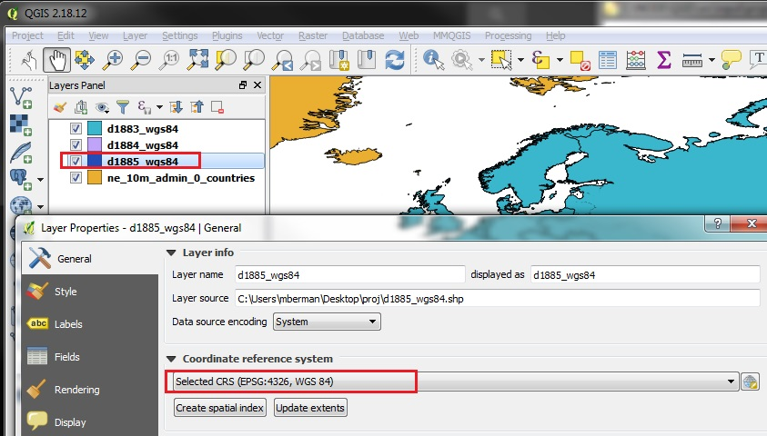
1. From the top Menu go to PROCESSING
2. The Processing Panel will open on the right
3. Type in the function that you want to use in the Search form of the Processing Toolbox: Reproject
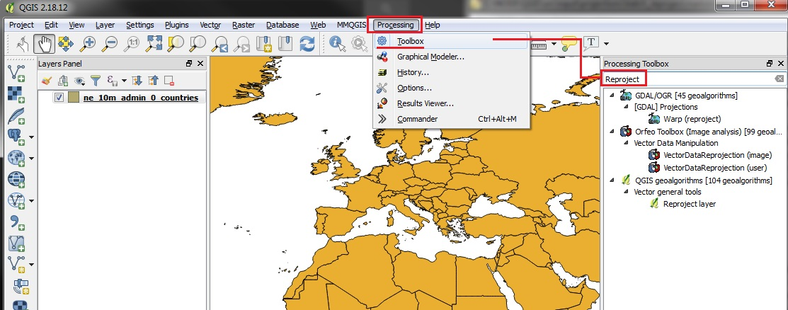
1. In the PROCESSING Toolbox panel, you should see the function REPROJECT LAYER appear under the Geoalgorithms section
2. Double-Click on the REPROJECT LAYER item
3. The Reproject Layer Window will open
4. Click on the RUN AS A BATCH PROCESS button
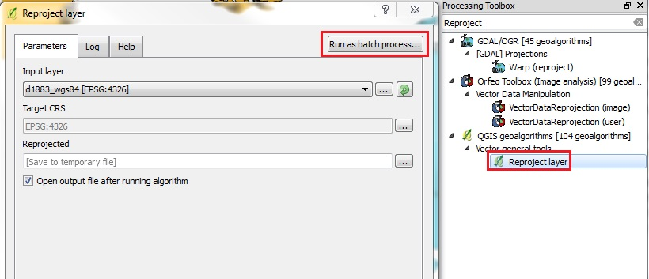
1. Click on the first row of the INPUT LAYERS with the ellipsis button (three dots ...)
2. Choose "Select from Open Layers"
3. A new window will open where you can CHECK all the layers that you want to INPUT into this batch process
4. In our example, we check the three input layers.
5. Click OK
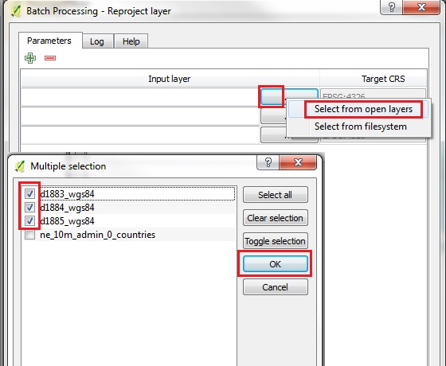
1. Now widen the window to see the TARGET CRS and REPROJECTED parameters
2. Click on the Ellipsis button for TARGET CRS and set a new CRS that the existing layers will be TRANSFORMED into
3. Here we choose World Equidistant Cylindrical (you can find it by looking for the EPSG number: 54002)
4. Click OK
5. Repeat the TARGET CRS step for the other INPUT files
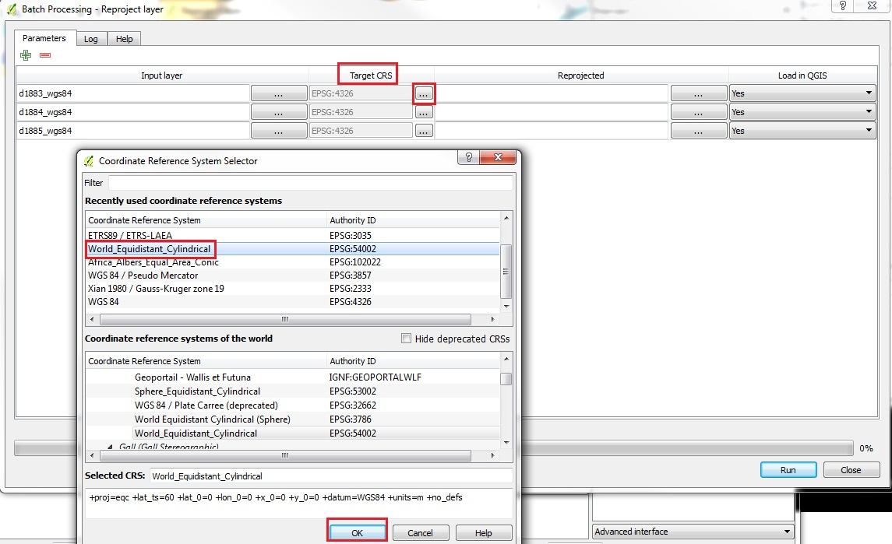
1. Now go to set the REPROJECTED parameters
2. Click on the Ellipsis button for REPROJECTED and browse to the folder where you want to create the new layers after they are reprojected
3. Here we choose Desktop | proj | reproj
4. Under Filename, create a syntax (a prefix) that you want to use for all the files in the batch
5. In this example, we type "reproj_"
6. Click SAVE
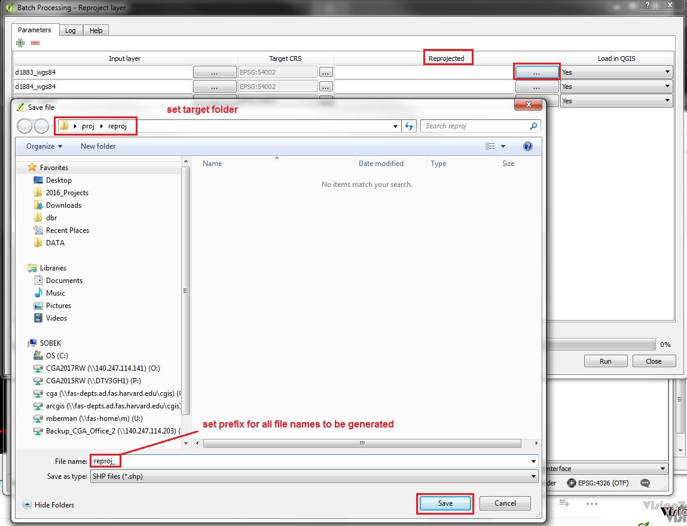
1. The AUTOFILL SETTINGS will appear
2. Reset the Autofill Mode to "Fill with parameter values"
3. Click OK
4. Note that the REPROJECTED target filenames will now be created, with the prefix "reproj_" concatenated to the original filenames.
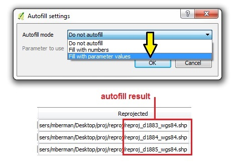
1. You may select to LOAD in QGIS or not, as the final parameter for the Batch Process
2. Click RUN
3. The progress of the batch will be indicated in the LOG tab that appears by default, after you click RUN
4. A small window will appear indicating when the process is completed, click OK
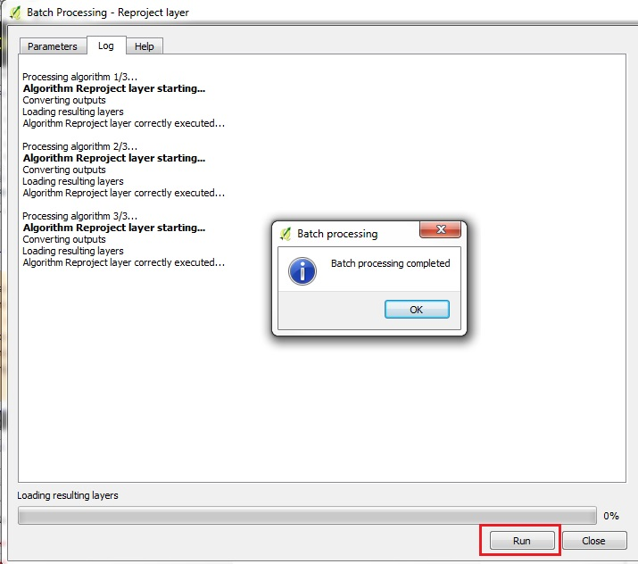
1. Click OK and CLOSE the Reproject Layer windows to see the results
2. Right click on one of the "REPROJECTED Layers" and check the PROPERTIES | GENERAL
3. The new CRS should be shown
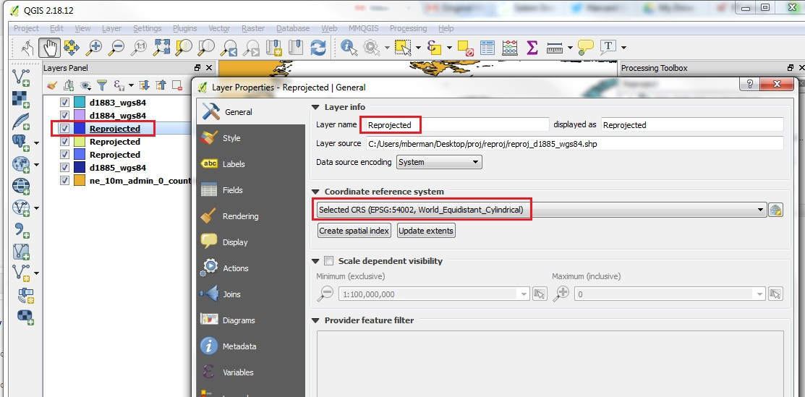
1. Note the layer list will label all the newly projected layers with the same layer label "Reprojected" by default after the Batch Reproject process. To prevent confusion, you can REMOVE those layers, and ADD VECTOR LAYER, to add the new layers in the proj/reproj folder
2. Now let's try to set the PROJECT CRS to the same projection as the new layers
3. Go to PROJECT | PROJECT PROPERTIES
4. In the CRS tab, set the projection to the NEW projection, such as EPSG 54002
5. Hit APPLY and OK
6. The datalayers should all be transformed in the MAP VIEW
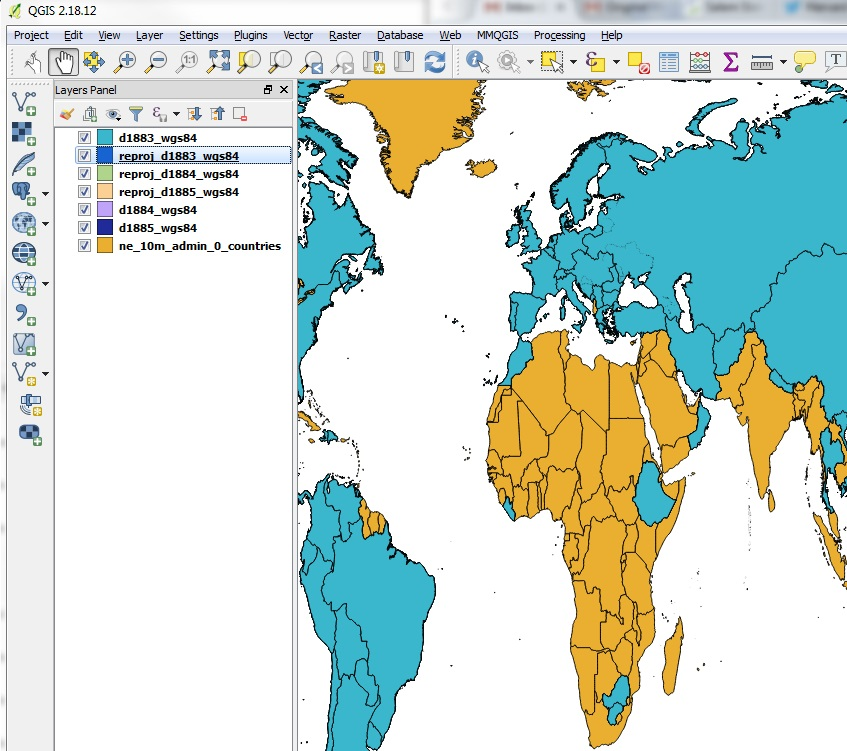
1. To make sure the transformation worked, go back to PROJECT | PROJECT PROPERTIES and UNCHECK the on the fly option
2. ADD VECTOR DATA and add a duplicate layer of one of the newly projected layers
3. the ON THE FLY transformation should TURN ITSELF BACK ON to handle the other layers that are still in WGS84
4. Now once again go to PROJECT | PROPERTIES and UNCHECK the "on the fly" option
5. This time the WGS84 Layers should no longer be auto-transformed. The STATUS BAR CRS should be EPSG 54002, and ONLY our newly transformed layers should be visible.
6. Success. You can batch reproject many files at once. We have successfully run this on several hundred files at a time.
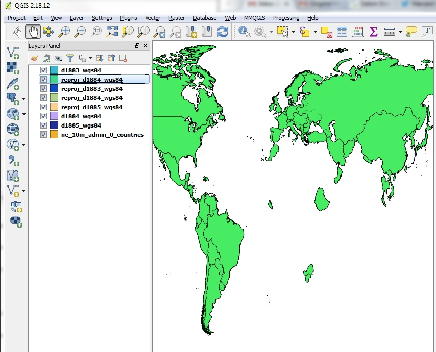
Proceed to Data Joins Instructions